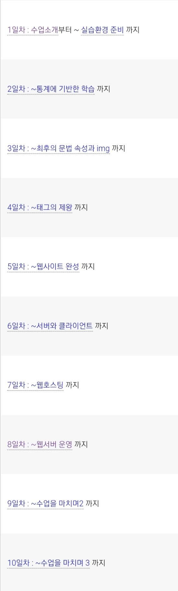
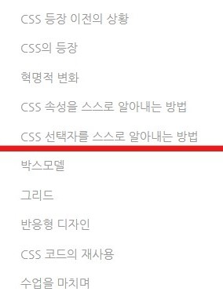
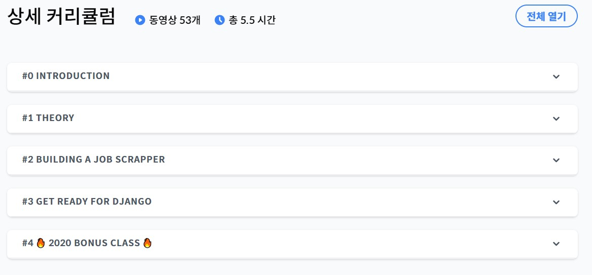

멤버: 장정원, 먹보 네오, ..., 화난 튜브
기간: 2022.01.11~2022.02.28 총 7주 (스터디 연장에 대해 추후 토의)
주 1회 질의응답·피드백·내용공유 -> 비대면
스터디 방식
1월 목표: 컴퓨터 프로그래밍에 대한 이해 -> 유튜브 ’생활코딩’의 ‘WEB1-html’ 수강
1주: 수업 소개 ~ 태그의 제왕 (4일차)
2주: ~웹서버 운영 (4일차)
3주: ~수업을 마치며3 (2일차) + ~CSS 선택자의 기본(7/16)

2월 목표: 파이썬 언어 습득 -> 유튜브 ’생활코딩’의 ‘WEB2-CSS’ 수강 & '노마드코더' 'Python으로 웹 스크래퍼 만들기' 수강
4주: ~Long take(16/16)
5주: ~1.12 Moudules + 노마드코더 파이썬 챌린지 시작
6주: ~2.16 OMG THIS IS AWESOME + 노마드코더 파이썬 챌린지
7주: ~3.6 Whats Next + 노마드코더 파이썬 챌린지

